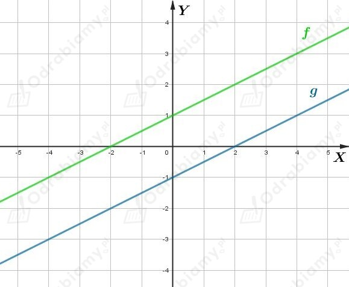
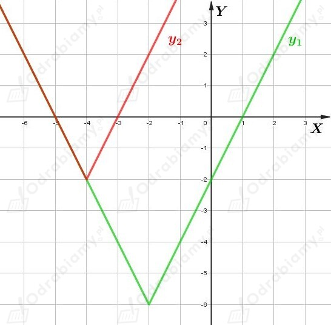
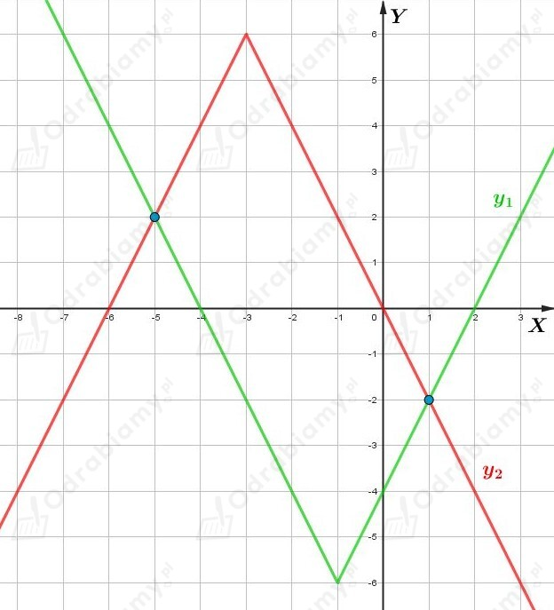

a)
Dany jest równoległobok ABCD, gdzie
Przekątne równoległoboku przecinają się w połowie. Wyznaczmy punkt P przecięcia się przekątnych tego równoległoboku. Mamy:
Wyznaczymy równanie prostej postaci y=ax+b zawierającej przekątną AC.
Wyznaczmy współczynnik kierunkowy tej prostej. Mamy:
czyli wtedy
Podstawiając współrzędne punktu A do równania tej prostej mamy:
Otrzymujemy równanie prostej zawierającej przekątną AC tego równoległoboku:
Wyznaczymy równanie prostej postaci y=ax+b zawierającej przekątną BD. Podana prosta przechodzi przez punkty B i P.
Wyznaczmy współczynnik kierunkowy tej prostej. Mamy:
czyli wtedy
Podstawiając współrzędne punktu B do równania tej prostej mamy:
Otrzymujemy równanie prostej zawierającej przekątną AC tego równoległoboku:
b)
Dany jest równoległobok ABCD, gdzie
Przekątne równoległoboku przecinają się w połowie. Wyznaczmy punkt P przecięcia się przekątnych tego równoległoboku. Mamy:
Wyznaczymy równanie prostej postaci y=ax+b zawierającej przekątną AC.
Wyznaczmy współczynnik kierunkowy tej prostej. Mamy:
czyli wtedy
Punkt A=(0, 0) jest punktem przecięcia prostej AC z osią OY, czyli b=0.
Otrzymujemy równanie prostej zawierającej przekątną AC tego równoległoboku:
Wyznaczymy równanie prostej postaci y=ax+b zawierającej przekątną BD. Podana prosta przechodzi przez punkty B i P.
Wyznaczmy współczynnik kierunkowy tej prostej. Mamy:
czyli wtedy
Podstawiając współrzędne punktu B do równania tej prostej mamy:
Otrzymujemy równanie prostej zawierającej przekątną AC tego równoległoboku:
Dana jest funkcja f określona wzorem
Dana jest funkcja g określona wzorem g(x)=ax+b.
Wykres funkcji g jest symetryczny do wykresu funkcji f względem punktu (0, 0).
Zatem wykresy funkcji f i g są równoległe, czyli a=1/2.
Punkt P1=(0, 1) przecięcia wykresu funkcji f z osią OY jest symetryczny względem (0, 0) do punktu P2 przecięcia wykresu funkcji g z osią OY, czyli
Zatem
Naszkicujmy wykresy funkcji f i g w jednym układzie współrzędnych:

Zbiorem rozwiązań nierówności f(x)⩽3 jest przedział:
Zbiorem rozwiązań nierówności g(x)⩾-2 jest przedział:
Wyznaczmy zbiór argumentów, dla których obie nierówności zachodzą jednocześnie. Mamy:
a)
Dana jest funkcja f określona wzorem:
oraz funkcja g określona wzorem
Współczynniki kierunkowe tych funkcji są różne, a więc wykresy tych funkcji przecinają się w jednym punkcie.
Sprawdźmy, dla jakich argumentów funkcja f przyjmuje wartości nie mniejsze niż funkcja g. Rozwiążmy nierówność:
a)
Dana jest funkcja f określona wzorem:
oraz funkcja g określona wzorem
Zapiszmy wzory tych funkcji w prostszej postaci. Mamy:
oraz
Współczynniki kierunkowe tych funkcji są różne, a więc wykresy tych funkcji przecinają się w jednym punkcie.
Sprawdźmy, dla jakich argumentów funkcja f przyjmuje wartości nie mniejsze niż funkcja g. Rozwiążmy nierówność:
Dane są funkcje liniowe
oraz
Funkcja g jest funkcją malejącą, czyli a<0.
Wyznaczmy miejsce zerowe funkcji f. Mamy:
Wyznaczmy miejsce zerowe funkcji g. Mamy:
Funkcje f i g mają wspólne miejsce zerowe. Stąd mamy:
Wiedząc dodatkowo, że a<0 mamy:
Dane są funkcje liniowe
oraz
Wyznaczmy miejsce zerowe funkcji f. Mamy:
Wyznaczmy miejsce zerowe funkcji g. Mamy:
Funkcje f i g mają wspólne miejsce zerowe. Stąd mamy:
Zapiszmy wszystkie całkowite rozwiązania powyższej zależności. Mamy:
Dana jest funkcja liniowa f określona wzorem
O tej funkcji wiadomo, że dla każdej liczby rzeczywistej x zachodzi warunek:
Mamy stąd:
Czyli
Dana jest funkcja f określona wzorem:
Wykres funkcji y=|2x| przesuniemy równolegle o wektor [-2,-6] i otrzymamy wykres funkcji f.
a)
Rozwiążemy graficznie równanie:
Zapiszmy to równanie jako:
Rozważmy funkcje:
Wykres funkcji f przesuniemy równolegle o wektor [-2, 4] i otrzymamy wykres funkcji y2.
Wykresy:

Odczytujemy zbiór rozwiązań rozważanego równania. Mamy:
b)
Rozwiążemy graficznie równanie:
Zapiszmy to równanie jako:
Rozważmy funkcje:
Wykres funkcji y=|2x| przesuniemy równolegle o wektor [-1, -6] i otrzymamy wykres funkcji y1.
Wykres funkcji y=-|2x| przesuniemy równolegle o wektor [-3, 6] i otrzymamy wykres funkcji y2.
Wykresy:

Odczytujemy zbiór rozwiązań rozważanego równania. Mamy:
Rozwiążmy podane równanie:
Dla m∈R\{-1/2, 1/2} podane równanie ma dokładnie jedno rozwiązanie.
Rozwiązanie tego równania ma spełniać warunek |x|>x. Podany warunek jest spełniony tylko dla x<0. Mamy stąd:
Licznik ułamka jest liczbą dodatnią, więc mianownik musi być liczbą ujemną. Mamy:
Uwzględniając, że m∈R\{-1/2, 1/2} mamy:
Dana jest funkcja liniowa f określona wzorem
której wykres przechodzi przez punkty
Punkt A=(0, 3) jest punktem przecięcia wykresu funkcji f z osią OY układu współrzędnych, czyli b=3.
Wyznaczmy współczynnik kierunkowy a. Korzystając ze wzoru na współczynnik kierunkowy mamy:
Zatem
a)
Rozwiążmy nierówność:
Korzystając z własności wartości bezwzględnej mamy:
czyli
b)
Rozwiążmy nierówność:
Uwzględniając rozważany przedział mamy:
Uwzględniając rozważany przedział mamy:
Podsumowując, otrzymujemy:
b)
Rozwiążmy nierówność:
Uwzględniając rozważany przedział mamy:
Uwzględniając rozważany przedział mamy:
Podsumowując, otrzymujemy:
Dane są funkcje f i g opisane wzorami:
a)
Wykresy funkcji f i g przecinają oś OY w tym samym punkcie, zatem wyrazy wolne we wzorach tych funkcji są równe. Mamy:
Korzystając z własności wartości bezwzględnej mamy:
Wykresy podanych funkcji przecinają oś OY w tym samym punkcie dla m=1/2.
b)
Wyznaczmy miejsce zerowe funkcji f. Mamy:
Wyznaczmy miejsce zerowe funkcji g. Mamy:
Funkcje f i g mają wspólne miejsce zerowe. Stąd mamy:
Korzystając z własności wartości bezwzględnej mamy:
Podane funkcje mają wspólne miejsce zerowe dla m=1 lub m=5.